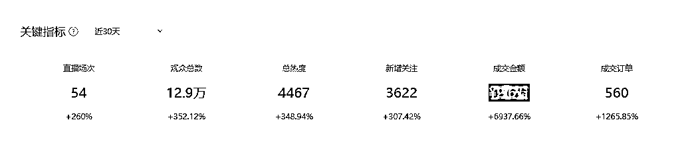

来源：https://jf9cp2suas.feishu.cn/docx/WTE4djWcuoTRamxKLG0cRfA9n2b
各位圈友，大家好，我是夏彬。
我是一个不安分的线下实体商家，同时也是一个资深的互联网资源整合者。
我的座右铭是“做好社会闲散资源的二次分配，就是在创造巨大社会价值”（这是我的副业，同时是我非常感兴趣的事情）。
目前跟着我们优秀的Lemon老师在做高考志愿填报直播获客项目。
其实认识我的朋友都知道，我之前一直在找各种各样的互联网的项目，但是由于各种各样的原因，很多项目我们都没有坚持到底，但是这次的项目，我认为它是一个具有福报项目，所以说我对这个项目充满了兴趣，也是我一直坚持下去的重要理由。
也是希望通过高考志愿填报这份工作，给更多的家长和孩子提供好的高报的指导意见，让孩子和家长能挑到适合自己的学校和专业。（我自己以前就是吃过高考填报志愿的亏，所以想让更多的家长不要踩坑）
我的工作经历相对来说是比较丰富的，在毕业之后做过销售，去过国企，也自己创过业，开过线下实体店，开过公司。并且在很多项目上都是拿到过不错的结果的。
包括但不限于：
陪诊/代问诊/挂号/床位/手术
无创DNA/基因检测/亲子鉴定
海外就医/第三代辅助生殖
等等。。。有些项目我们不方便在这里展示，需要的宝子可以来链接哦。
接下来我们就讲讲这一次我们的高报航海项目。
首先，给大家看一组图片，这是我从开始直播——跑通0到1（赚到第一块钱）——到日入过千的一个时间节点图表：
这个表格是我从视频号助手里扒下来的，从表格中我们可以看到：
| 时间 | 任务 | 备注 |
|---|---|---|
| 4月13号 | 测试直播账号 | 开播了几分钟，此前没有做过直播，先试一下 |
| 4月14号 | 第一场直播 | 6小时，拉账号时长 |
| 4月18号 | 起号成功 | 做到了4000+的场观（正常一小时左右场观破千就算是起号成功） |
| 4月21号 | 开始带货 | 开始带货，当天一场直播就出了9单（这是一个小课包，卖9块钱，我们一单的佣金是25，所以当天是可以拿到225元的） |
| 4月25号 | 日如破千 | 当天一共开了三场直播（每场时长1.5小时左右），总共收入大概在1100多块钱，完成日入过千的小成就。 |
虽然在我们生财这个收入水平比较低，但也算是彻底的跑通了0-1的一个小闭环了。现在这个项目已经跑了一个多月了，虽然我们还是项目新手，但是初步估计一个月也能拿到3万多，我觉得还是非常开心的。
继续上个图：

好了，秀完肌肉我就要开始讲讲复盘了，接下来就是我要分享的几个点：
1、航海选择
2、航海实操
3、航海感悟
本次复盘我将通过以上这些点，结合我们高报航海项目，给大家去讲一讲，在航海中我们需要注意哪些东西，怎么样才有可能拿到结果。
熟悉生财圈子的朋友都知道，涛哥反复强调的"做不消耗的事情"这个认知点，这次做高考志愿填报项目的经历让我真正读懂了其中的深意。
怎么去选择航海也是很多圈友都会遇到的问题？
其实之前我也参加过很多航海项目，之前选项目时，通常也不会去考虑适不适合自己，往往都是什么项目火、什么项目正反馈来的快，我就去冲什么项目。
虽然多数都赚到了第一块钱，但最终都倒在持续投入的路上。
为什么同样拿到正反馈，却只有这次高报项目让我持续深耕？
细究核心差异，在于能量消耗——项目适配度越高，能量消耗越少，项目长久的可能性越高。
其实作为一个天生表达欲旺盛的ENTP人格，直播间的高频互动、即时反馈、知识输出的特性，完美契合我的优势基因。
当别人觉得日播3小时是煎熬时，于我而言恰是滋养心力的能量场。
这种觉醒让我重新审视曾折戟的虚拟资料项目：机械性的选品、重复的上下架操作、客服话术的单一循环...这些需要强执行但低认知参与度的动作，本质上是在持续透支我的决策心力。就像让擅长战略布局的将军去站岗放哨，注定会陷入精神内耗的恶性循环。
所以我认为选择航海时，需要去找到真正的项目适配度，不在于赛道是否热门，而在于能否将你的天赋热情转化为可持续的生产力。找到那个让你"越做越精神"的事情，才是穿越项目周期的终极密码。
很多圈友在0-1的过程中会犹豫，自己这样做对不对，是不是要增加了解再执行，导致踌躇不前？
其实只要是在生财航海中实战中拿到过结果的老圈友肯定是深有体会，就是我们生财的航海手册是做的非常细致的，他会把我们项目的各个节点都做到一目了然。从流量入口到变现闭环的每个毛细血管，都经过各种各样的迭代、更新、细化才会最终呈现在我们所有船员面前。
这意味着当新人手握这份航海图谱时，真正要突破的从不是方法论层面的认知屏障，而是能否将自己调频到"执行机器"状态——像北极星号核潜艇的声呐系统那样，精准锁定教练发出的每一个指令频率。
高报航海首周的实战场景至今记忆犹新：面对一个在线观众都没有的直播间（夸张了一下，还是偶尔会有一两在线观众的），6小时独白式直播如同信息孤岛上的生存实验。整场直播的场观数据像卡带的唱片定格在100+时，那种不知道路在何方的迷茫，足以击穿90%创业者的心理防线。
但正是这种极端压力测试，让"简单、听话、照做"六字真言显露出它的锋利——当所有船员将直播时长焊死在六小时的框架上时，当每一句互动话术都复刻教练提供的情绪颗粒度模板，冷启动的坚冰终会被凿穿。
（真的要感谢一下我们优秀的教练，时刻给我们提供最耐心讲解，让我们能不断的在无垠的大海中航行）
最终，我们都亲眼见证那些咬牙完成"话术肌肉记忆训练"的伙伴们，他们的直播间在航海中陆续迎来了破晓的曙光：从单日80场观到3000+、4000+精准流量的跃迁。
这印证了航海体系的底层设计智慧：在正确范式中，所有反人性的机械重复本质都是蓄能装置，当势能积累突破临界点，你过往咬牙坚持的每个"无意义动作"都会瞬间转化为裂变燃料。
所以怎么去做航海？我总结下来就是：把自己变成海图上的一个坐标点，让系统算法的洋流带着你前进。毕竟在生财的星辰大海里，"简单听话照做"从来不是保守策略，而是最凶悍的破冰船头。
高报航海中，我们深刻认识到细节把控才是决定胜负的关键手。当团队完成了基础层面的"简单、听话、照做"后，真正的战役才刚刚开始——那些藏在操作面板后的魔鬼细节，才是真正考验航海者功力的战场。
我们的教练团队在开播前就反复强调直播直播是一定要做好：画面质感、情绪张力、内容价值这个三项工作。为此，我在开播前3分钟，把需要用到的东西一一检查，看看是否有所纰漏，然后把画面调整到我觉得满意的一个程度，虽然这些都是一些很细节的东西，但往往它会决定我们这场直播能不能成功。
（最近又发现了一个问题，就是没有及时复盘，导致很多好的经验在不断的直播中被消耗。复盘一定要留下文字记录）
在我们这期航海中，有个队友在连续三天6小时/天的马拉松式直播中颗粒无收。复盘时发现致命细节——账号属性误设为美妆赛道，而我们的知识主播定位需要完全不同的流量入口；直播推荐也设置成了全国的（ps：我们都是按照省份去进行设置，因为讲的都是某个省的学校），导致了标签一直打不精准，影响了账号的起号进度。
最后感谢阅读到这里每一位朋友,由衷地感谢生财有术,感谢高报项目的所有的教练,感谢Lemon老师。
现在正值6月航海报名期，可以提一下，鼓励大家报名航海多加尝试，在实战中找到自己适合的项目。
最后也是希望所有的圈友都能在生财中找到自己前进方向，实现自己的人生追求。
祝大家都生财有术,八方来财~